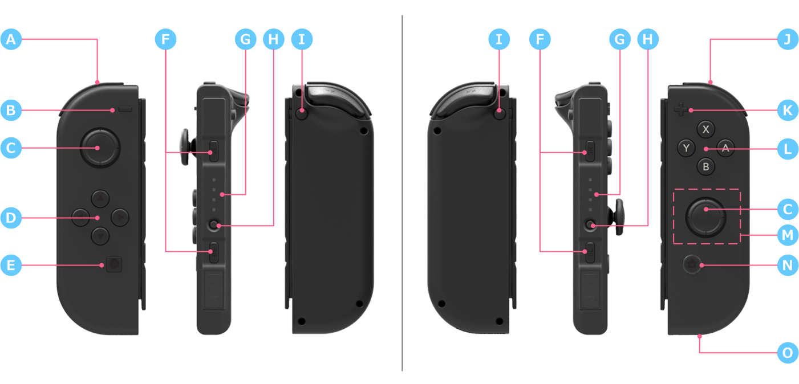
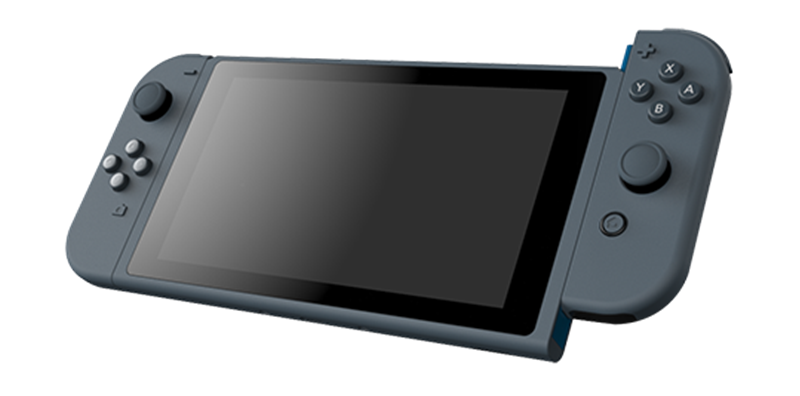

The figure Figure 3-3 Appearance of the JOY-CON shows the front, console-facing, and back sides of the JOY-CON. The images on the left are the left controller, and the images on the right are the right controller.

The right-left JOY-CON configuration is not symmetrical. Some components are unique to each controller.
| Item | Name | Left Controller | Right Controller | Description |
|---|---|---|---|---|
| A | L, ZL Buttons | ✔ | ||
| B | - Button | ✔ | ||
| C | L/R Sticks | ✔ | ✔ | There are analog sticks on the left and the right. Allows for push input. The peripheral guide shape is circular. |
| D | Directional Buttons (Up Button, Down Button, Left Button, Right Button) |
✔ | Instead of forming a plus-shape, each direction has a separate button. | |
| E | Capture Button | ✔ | Used to take application screenshots. | |
| F | SL, SR Buttons | ✔ | ✔ | When you hold JOY-CON horizontally, you can use the L and R Buttons. When you dock the JOY-CON in the rail and it is paired with the NX, you can neither see nor operate those buttons. |
| G | Player LED | ✔ | ✔ | An LED that indicates which player number has been assigned to the JOY-CON held by the user. There are four LEDs per JOY-CON. You cannot see them when the JOY-CON is docked in the rail and paired with the NX because the LEDs are placed in the rail area. |
| H | SYNC Button | ✔ | ✔ | A button that resets the JOY-CON and that synchronizes its connection with the NX. When you dock the JOY-CON in the rail and it is paired with the NX, you can neither see nor operate those buttons. |
| I | Release button | ✔ | ✔ | The button that detaches the JOY-CON controllers from the console when you want to release them. |
| J | R, ZR Buttons | ✔ | ||
| K | + Button | ✔ | ||
| L | A, B, X, Y Buttons | ✔ |
When held horizontally, the names for the buttons change as follows to match the direction.
|
|
| M | NFC Reader/Writer | ✔ |
Allows you to read from or write to objects like amiibo using near-field communication. IC cards, like those used for transportation, can also be detected. (Japan only) |
|
| N | HOME Button | ✔ | A button for transitioning to the HOME Menu. The Notification LED is built into this button. | |
| Notification LED | ✔ | This LED flashes or lights up when a notification arrives. | ||
| O | IR sensor | ✔ | A sensor that uses infrared. The IR sensor can detect and recognize very fast hand movements and hand shapes. | |
| - | Accelerometer | ✔ | ✔ | This sensor detects changes in inclination and motion. |
| - | Gyro sensor | ✔ | ✔ | This sensor detects changes in angle and rotation speed. |
| - | Battery pack | ✔ | ✔ |
A 525-mAh rechargeable battery is included. The battery lasts for roughly 20 hours of play time. This estimated duration is under normal conditions and use, and the actual duration may differ depending on actual usage conditions. |
| - | Linear resonant actuator | ✔ | ✔ | The linear resonant actuator allows for a wider variety of vibrations than the earlier rumble motor. |
Rails are built into the right and left sides of the NX main body. You slide the JOY-CON controllers down the rails to physically connect the components. (See Figure 3-4 Attaching the JOY-CON to the NX.) At this point, there is wired communication with the console.

The JOY-CON controllers have no connectors for recharging. They can be recharged only when attached to an NX system that is being powered by an AC adapter. (The JOY-CON will not be charged when the NX is running on batteries.) The right and left controllers can be switched out for others to recharge them as well, but button input will be disabled.
When removed from the console to use as independent controllers, the JOY-CON controllers communicate with the console over wireless communication via Bluetooth. A pair of JOY-CON controllers form a set; a maximum of four sets can be connected at any one time.
For details about the connection between the JOY-CON controllers and the console, see Controller Guide.
CONFIDENTIAL